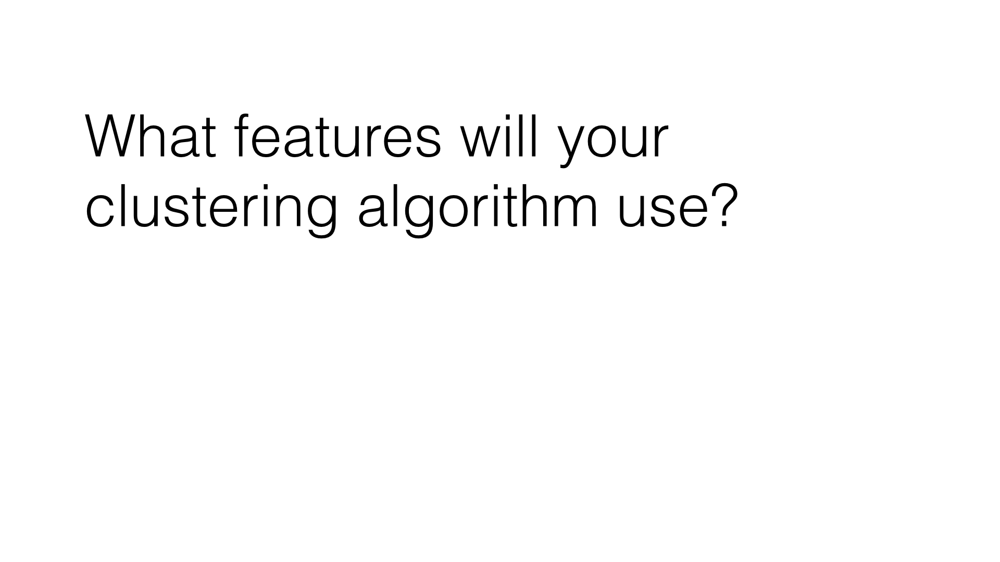

19. Clustering Features
Clustering Features
Question:
The starter code can be found in k_means/k_means_cluster.py, which reads in the email + financial (E+F) dataset and gets us ready for clustering. You’ll start with performing k-means based on just two financial features--take a look at the code, and determine which features the code uses for clustering .
Run the code, which will create a scatterplot of the data. Think a little bit about what clusters you would expect to arise if 2 clusters are created.
Start Quiz:

INSTRUCTOR NOTE:
The Enron dataset can be found here .